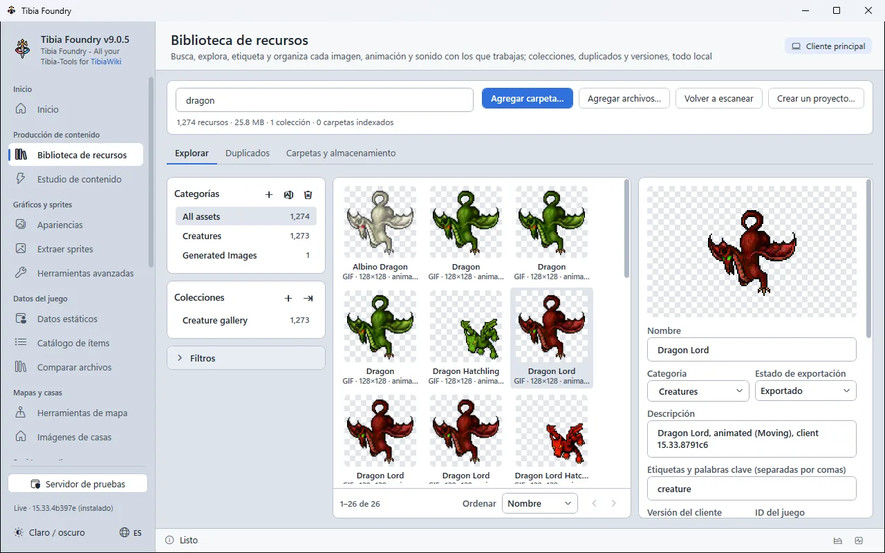
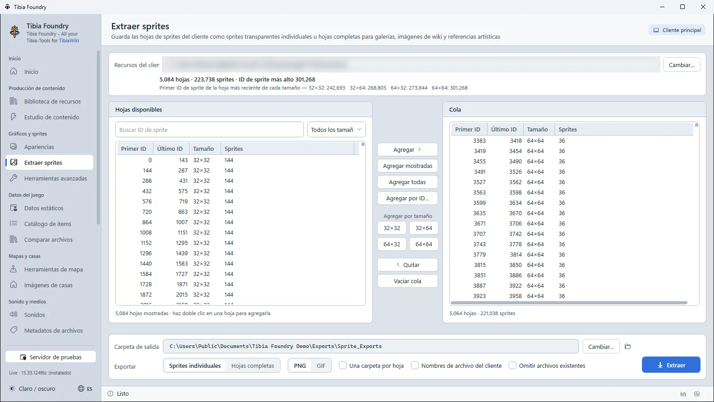
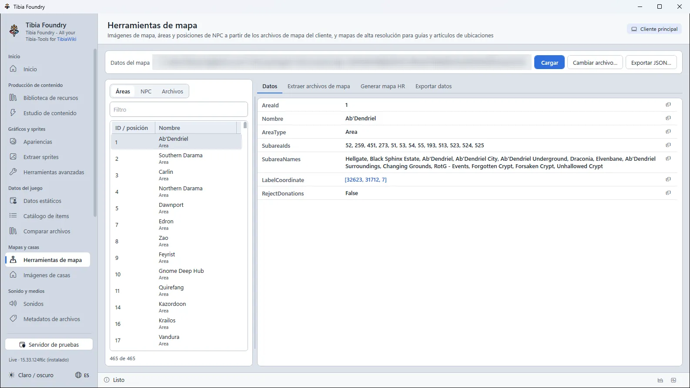
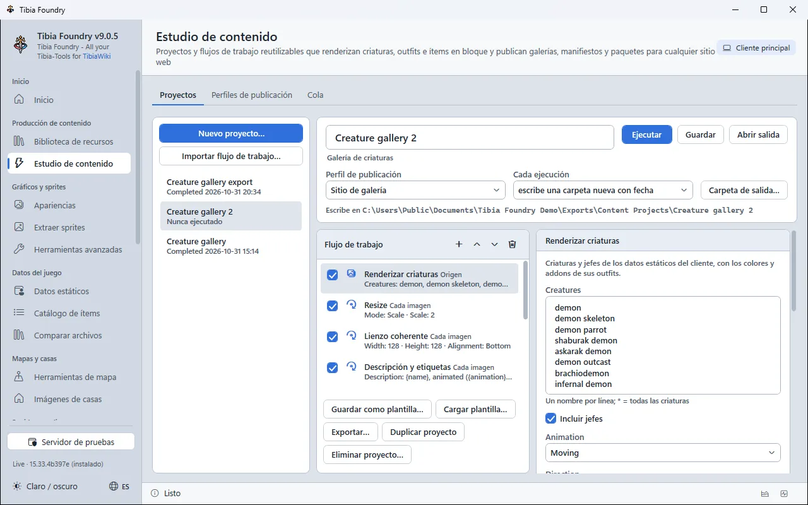

Todo lo que necesitas para crear contenido de Tibia.
Un kit de herramientas de escritorio gratuito que convierte tu cliente de Tibia instalado en sprites, GIF de outfits, mapas, sonidos y galerías completas para la wiki.
Tibia Foundry es un software desarrollado de forma independiente por Rocky LaRochelle. No ha sido creado, desarrollado, distribuido ni recibe soporte de CipSoft GmbH. Seguridad de la descarga e información de la versión
Versión 9.0.5Publicada el 17 de noviembre de 2026Sumas de verificación SHA-256
Windows 10/11, gratis, sin cuenta, funciona sin conexión

Hoy en Tibia
- Criatura potenciada
- Jefe potenciado
- Rashid está en
- Próximo server save
En días de mantenimiento el servidor puede volver más tarde.
Cómo se calcula
Todos los mundos de juego hacen el guardado una vez al día, a las 10:00 de la hora de Europa Central: CET en invierno, CEST en verano, es decir, la hora de Berlín. El próximo server save es las próximas 10:00 de Berlín; justo a las 10:00:00 el guardado acaba de ocurrir, así que el siguiente es el del día siguiente. La cuenta atrás muestra el tiempo hasta entonces y la hora aparece en tu zona horaria. En días de mantenimiento prolongado el servidor vuelve más tarde; eso no está incluido.
Fuentes
La ciudad de Rashid depende del día de la semana, y el día de Tibia empieza en el server save (10:00 de Berlín), no a medianoche: hasta las 10:00 sigue donde estaba el día anterior. Lunes Svargrond, martes Liberty Bay, miércoles Port Hope, jueves Ankrahmun, viernes Darashia, sábado Edron, domingo Carlin. Ejemplo: el domingo a las 09:59 de Berlín sigue en Edron; a las 10:00 está en Carlin.
Fuentes
- TibiaWiki: Rashid (se abre en una pestaña nueva) (wiki)
- tibiastats.pl (se abre en una pestaña nueva) (calculadora)
- tibiaroute.com (se abre en una pestaña nueva) (calculadora)
Elige tu camino
-
Consigue el programa de escritorio
Instalador, edición portátil y código fuente de la versión 9.0.5, gratis para Windows 10 y 11.
-
Usa las herramientas online
Calculadoras con fuentes, además de personajes, mundos, highscores y más con datos en vivo, directamente en tu navegador.
-
Crea tu fansite (se abre en una pestaña nueva)
Código abierto en GitHub desde hoy; pronto llegará el código de cada herramienta bajo la licencia MIT.
Lo que hace el programa de escritorio
23 herramientas, agrupadas por tarea, que comparten un cliente, una biblioteca y un conjunto de reglas de exportación.
Gestión de recursos
Una biblioteca con búsqueda de todas las imágenes, animaciones y sonidos (colecciones, etiquetas, versiones, detección de duplicados) en la que cada exportación se agrega automáticamente.
Biblioteca de recursos
Extracción de recursos
Sprites transparentes u hojas de sprites completas, todos los objetos, outfits, efectos y proyectiles, datos de criaturas y quests, y los sonidos y la música del cliente.
Extraer sprites · Apariencias · Datos estáticos · Sonidos
Creación de gráficos
GIF animados con ajustes predefinidos para fansites, outfits con colores, addons y monturas, animaciones de criaturas y ampliación exacta al píxel de 1× a 8×.
Apariencias (Outfitter) · Herramientas avanzadas
Mapas y casas
Imágenes de mapas, áreas y posiciones de NPC, mapas en alta resolución para guías e imágenes de casas para cada artículo de casa.
Herramientas de mapa · Imágenes de casas
Flujos de contenido
Proyectos reutilizables que generan galerías de criaturas, outfits y objetos, recursos de actualización e imágenes para la wiki: se configuran una vez y se vuelven a ejecutar con cada actualización.
Estudio de contenido
Publicación para cualquier sitio
Perfiles para TibiaWiki, tu fansite, galerías, artículos o un archivo personal: tamaños, formatos, nombres, carpetas, manifiestos, créditos y fragmentos de código.
Perfiles de publicación · Galerías HTML
Capturas reales de la versión 9.0.5



Herramientas online gratuitas
Calculadoras con sus fórmulas y fuentes, y datos de la comunidad en vivo de Tibia.com a través de TibiaData, sin descargas ni cuenta.
Calculadoras
- Experiencia y nivelExperiencia hasta tu nivel objetivo, tiempo de caza, fecha estimada y rango de share en party.
- Regeneración de staminaTiempo desconectado para recuperar stamina hasta 42:00 y la hora en que llegas al objetivo.
- BlessingsCuánto cuestan las 5 blessings normales, las 2 enhanced, la Blessing of the Inquisition y la Twist of Fate a tu nivel.
- Stats del personajePuntos de vida, maná y capacidad de tu vocación en cualquier nivel, incluido el Monk.
Datos de la comunidad
Todas las herramientasTibia News & Updates
Las últimas noticias de Tibia.com, actualizadas automáticamente.
Para creadores de fansites
Muy pronto: el código de cada herramienta de este sitio, libre para usar en tu propio fansite bajo la licencia MIT. El código fuente completo ya está en GitHub.
Descarga Tibia Foundry 9.0.5
Gratis para Windows 10 y 11 (64 bits). Elige la edición que más te convenga: el instalador y la edición portátil contienen el mismo programa.
Aviso importante sobre la descarga
Tibia Foundry es un software desarrollado de forma independiente por Rocky LaRochelle. No ha sido creado, desarrollado, distribuido ni recibe soporte de CipSoft GmbH.
Tibia Foundry es un proyecto independiente hecho por un fan y no es un producto oficial de Tibia.
CipSoft GmbH no es responsable de este software. Descárgalo solo desde las fuentes oficiales de distribución de Tibia Foundry y revisa la información publicada de la versión antes de instalarlo.
Instalador
Recomendado para la mayoría.
Instalador (MSI en un .zip)TibiaFoundry-9.0.5-MSI.zip67,5 MB
Portátil
Un archivo, sin instalación.
Portátil (.zip)TibiaFoundry-9.0.5-Portable.zip84,5 MB
Código fuente
Para desarrolladores y colaboradores.
Código fuente (.zip)TibiaFoundry-9.0.5-Source.zip38,9 MB